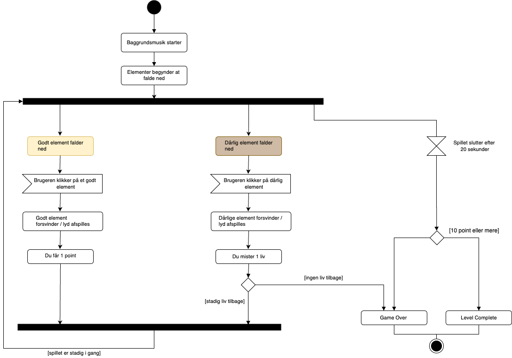
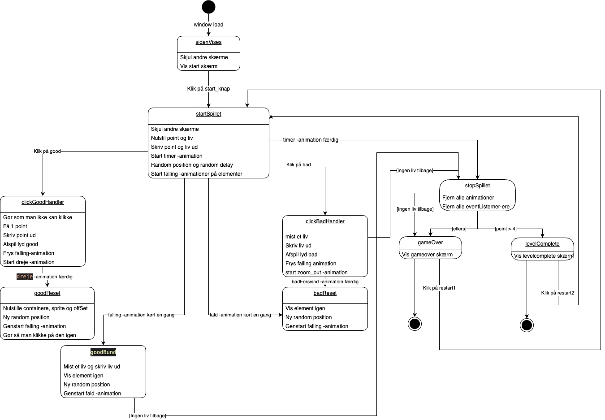

Aktivitetsdiagram
Start:
- Man begynder spillet og står klar til at hjælpe kunderne i butikken.
- Kunde kommer ind: En kunde træder ind i butikken og spørger efter et specifikt stykke tøj. Nu er det ens opgave at finde det.
- Tøj falder ned fra loftet: Pludselig vælter en bunke tøj ned fra loftet og fylder butikken.
- ind det rigtige tøjstykke: Man skal nu kigge rundt og træffe beslutninger for at finde det præcise tøjstykke, kunden leder efter. Man kan klikke på forskellige stykker tøj eller trække dem for at se nærmere.
- Korrekt tøj fundet: Hvis man vælger det rigtige tøjstykke, går man videre til Level Complete Det betyder, at man har løst opgaven, og kunden er tilfreds.
- Forkert tøj valgt: Hvis man vælger det forkerte tøj, mister man et liv.
- Tre liv tabt (Game Over): Hvis man mister alle tre liv, ender spillet. Kunden forlader butikken utilfreds.
- Start et nyt spil: Efter Game Over har man mulighed for at starte et nyt spil og prøve igen
State Machine diagram
- Start: Dette er det indledende punkt, når spillet starter. Overgangen til dette stadie sker, når siden indlæses, og "window.addEventListener("load", sidenVises)" kaldes. Dette stadie udløser "sidenVises" funktionen og går videre til "startSpil" staten.
- Start Spillet: Dette stadie er starten af spillet. Her nulstilles point og liv, og timeren og animationerne starter. Spillet går derefter til "Good Falling" og "Bad Falling".
- Good Falling: Dette stadie er, når et godt element falder ned i butikken. Her starter animationen, og spilleren kan klikke på det for at score point. Når animationen er færdig, går spillet til "startSpil" igen.
- Bad Falling: Dette stadie er, når et dårligt element falder ned i butikken. Her starter animationen, og hvis spilleren klikker på det, mister man et liv. Når animationen er færdig, går spillet til "startSpil" igen.
- Stop Spillet (Game Over eller Level Complete): Når spillet stopper, fjernes alle animationer og lyttere fra elementerne. Hvis spilleren løber tør for liv, vises "Game Over" skærmen, og spillet kan startes forfra. Hvis spilleren opnår tilstrækkeligt med point, vises "Level Complete" skærmen, og spillet kan startes forfra.